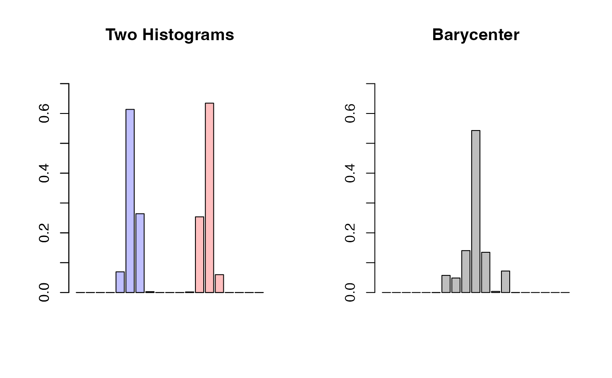

Barycenter of Histograms by Cuturi & Doucet (2014)
histbary14C.RdGiven multiple histograms represented as "histogram" S3 objects, compute
Wasserstein barycenter. We need one requirement that all histograms in an
input list hists must have same breaks. See the example on how to
construct a histogram on predefined breaks/bins.
Arguments
- hists
a length-\(N\) list of histograms (
"histogram"object) of same breaks.- p
an exponent for the order of the distance (default: 2).
- weights
a weight of each image; if
NULL(default), uniform weight is set. Otherwise, it should be a length-\(N\) vector of nonnegative weights.- lambda
a regularization parameter; if
NULL(default), a paper's suggestion would be taken, or it should be a nonnegative real number.- ...
extra parameters including
- abstol
stopping criterion for iterations (default: 1e-8).
- init.vec
an initial weight vector (default: uniform weight).
- maxiter
maximum number of iterations (default: 496).
- nthread
number of threads for OpenMP run (default: 1).
- print.progress
a logical to show current iteration (default:
TRUE).
References
Cuturi M, Doucet A (2014). “Fast computation of wasserstein barycenters.” In Xing EP, Jebara T (eds.), Proceedings of the 31st international conference on international conference on machine learning - volume 32, volume 32 of Proceedings of machine learning research, 685--693. http://proceedings.mlr.press/v32/cuturi14.html.
Examples
# \donttest{
#----------------------------------------------------------------------
# Binned from Two Gaussians
#
# EXAMPLE : Very Small Example for CRAN; just showing how to use it!
#----------------------------------------------------------------------
# GENERATE FROM TWO GAUSSIANS WITH DIFFERENT MEANS
set.seed(100)
x = stats::rnorm(1000, mean=-4, sd=0.5)
y = stats::rnorm(1000, mean=+4, sd=0.5)
bk = seq(from=-10, to=10, length.out=20)
# HISTOGRAMS WITH COMMON BREAKS
histxy = list()
histxy[[1]] = hist(x, breaks=bk, plot=FALSE)
histxy[[2]] = hist(y, breaks=bk, plot=FALSE)
# COMPUTE
hh = histbary14C(histxy, maxiter=5)
# VISUALIZE
opar <- par(no.readonly=TRUE)
par(mfrow=c(1,2))
barplot(histxy[[1]]$density, col=rgb(0,0,1,1/4),
ylim=c(0, 0.75), main="Two Histograms")
barplot(histxy[[2]]$density, col=rgb(1,0,0,1/4),
ylim=c(0, 0.75), add=TRUE)
barplot(hh$density, main="Barycenter",
ylim=c(0, 0.75))

par(opar)
# }